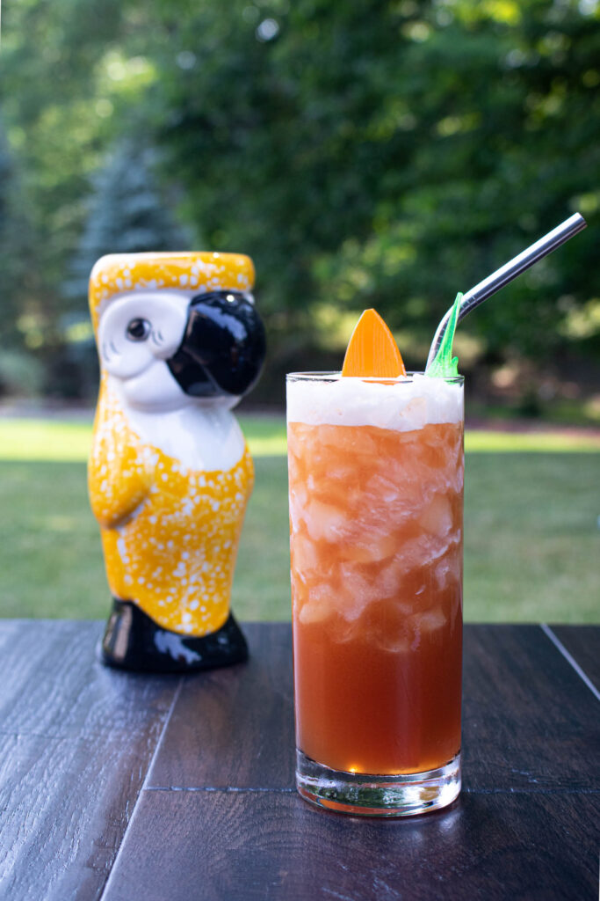

Drinks
Jungle Bird

Ingredients
- 1 1/2 ounces Dark Rum
- 1 1/2 ounces Pineapple Juice
- 1 ounce Campari
- 1/2 Lime Juice
- 1/2Simple Syrup
Instructions
-
Add the rum, Campari, pineapple juice, lime juice, and simple syrup into a shaker with ice and shake until well-chilled.
-
Strain into a rocks glass over fresh ice.
-
Garnish with a pineapple wedge.